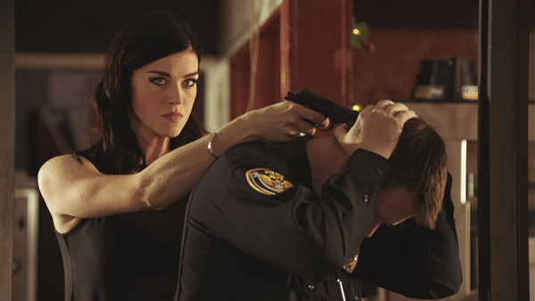
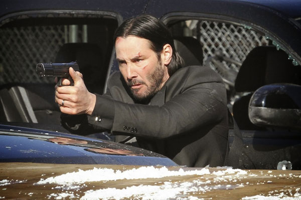
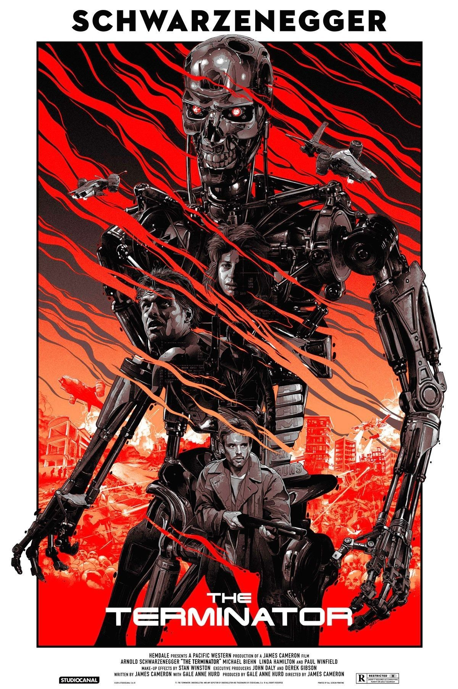
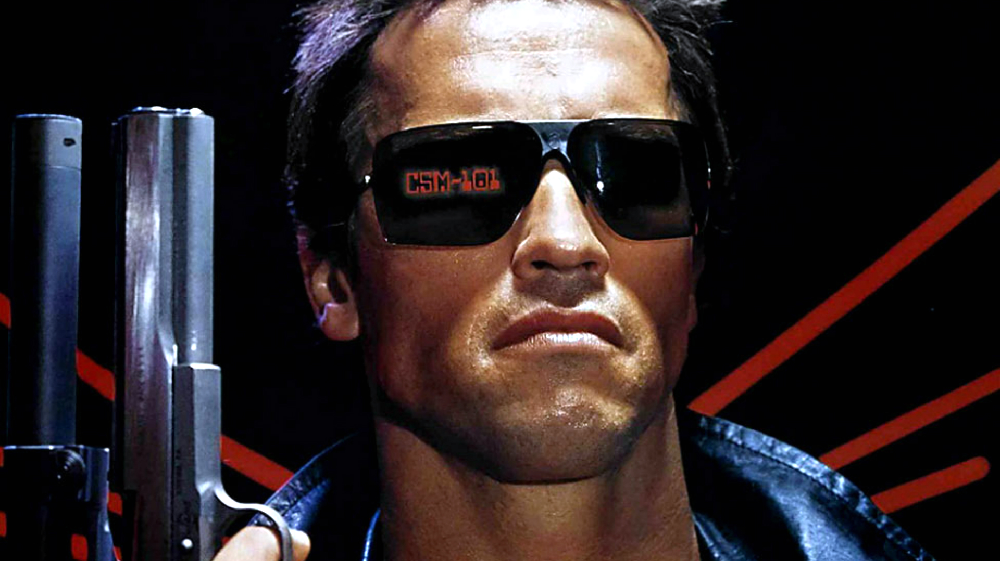
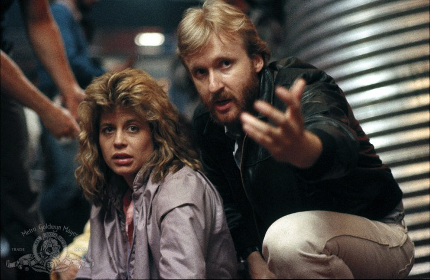

John Wick 3
เรื่องราวอดีตนักฆ่ามือปืนฝีมือพระกาฬอันดับหนึ่งของวงการอย่าง “จอห์น วิค - John Wick” (รับบทโดย คีอานู รีฟส์ - Keanu Reeves)
ที่ตัดสินใจหันหลังจากวงการมืดและตั้งใจจะเริ่มต้นชีวิตใหม่อย่างเงียบสงบกับสุนัขของภรรยาที่ได้ตายจากไป แต่ชีวิตของเขากลับไม่เป็นอย่างที่คิด
จอห์นถูกหมายหัวจากหัวหน้าแก๊งค์อาชญากรที่โหดเหี้ยมและมีอำนาจที่สุดของนิวยอร์ค โดยมีนักฆ่าฝีมือฉกาจที่เคยเป็นเพื่อนสนิทที่สุดกับเขามารับหน้าที่ตามล่าตัวเขา

ยอดนักฆ่าอย่าง จอห์น วิค จึงต้องปลุกสัญชาตญาณนักฆ่าในตัวขึ้นมาอีกครั้ง เพื่อเอาคืนชนิดหมัดแลกหมัด กระสุนแลกกระสุน ถึงแม้ว่าคู่ปรับตรงหน้าจะเป็นอดีตเพื่อนนักรักนักฆ่าที่เขาเคยเชื่อใจที่สุดก็ตาม
อีกทั้งเขายังต้องทำทุกวิถีทางเพื่อหาคำตอบว่าเกิดอะไรขึ้นกับเขากันแน่ พวกมันต้องการตามล่าเขาไปทำไม…?


THE TERMINATOR
ตัวหนังเข้าฉายครั้งแรกในวันที่ 26 ตุลาคม ค.ศ. 1984 (พ.ศ. 2527) ที่ประเทศอเมริกา เรื่องราวภาคแรกจากทั้งหมด 5 ภาค (ก่อนที่ภายหลังจะรีบูทมาสร้างภาคต่อจาก 1-2
ในภาค Dark Fate) ที่มีความยาวสั้นที่สุดในแฟรนไชส์ Terminator ด้วยความยาว 107 นาที

ซึ่งตัวหนังเข้าฉายครั้งแรกในวันที่ 26 ตุลาคม ค.ศ. 1984 (พ.ศ. 2527) ที่ประเทศอเมริกา เรื่องราวภาคแรกจากทั้งหมด 5 ภาค (ก่อนที่ภายหลังจะรีบูทมาสร้างภาคต่อจาก 1-2
ในภาค Dark Fate) ที่มีความยาวสั้นที่สุดในแฟรนไชส์ Terminator ด้วยความยาว 107 นาที
เมื่อโลกปี ค.ศ. 2029 (พ.ศ. 2572) เกิดการต่อสู้ระหว่างจักรกลกับมนุษย์ขึ้น และมนุษย์เป็นฝ่ายชนะ จักรกลจึงทำการส่งหุ่นพิฆาตมาในอดีต เพื่อฆ่า Sarah Connor
ก่อนที่เธอจะให้กำเนิดผู้นำมนุษย์ที่จะพาพวกมนุษย์พิชิตจักรกล John Connor ทางฝั่งมนุษย์ก็ส่ง Kyle Reese เพื่อมาปกป้องแม่ของผู้นำคนนั้น
